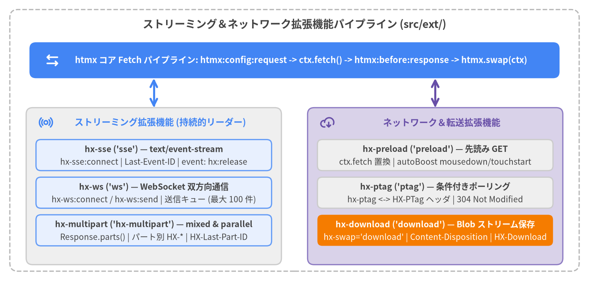

ストリーミング＆ネットワーク拡張機能
htmx v4.0.1 は、サーバーからクライアントへの持続的ストリーミング（hx-sse、hx-ws、hx-multipart）およびネットワーク転送最適化（hx-preload、hx-ptag、hx-download）のための 6 つの公式拡張機能を提供します。すべての拡張機能はスクリプト読み込み時に htmx.registerExtension() を通じてグローバルに登録され、Fetch ベースの ctx リクエストパイプラインに直接統合されます。
| シンボル | 登録名 | スクリプトファイル | カテゴリ | 主な役割 |
|---|---|---|---|---|
hx-sse |
sse |
src/ext/hx-sse.js |
ストリーミング | text/event-stream（SSE）レスポンスをストリーミングし、無名メッセージのスワップと名前付き DOM イベントの発火を行います。 |
hx-ws |
ws |
src/ext/hx-ws.js |
ストリーミング | 双方向 WebSocket 接続（hx-ws:connect、hx-ws:send）と送信キュー付き JSON シリアライズ、HTML/JSON スワップを提供します。 |
hx-multipart |
hx-multipart |
src/ext/hx-multipart.js |
ストリーミング | multipart/mixed（順次）および multipart/parallel（並列）パートをパート別 HX-* ヘッダと Response.prototype.parts() でストリーミングします。 |
hx-preload |
preload |
src/ext/hx-preload.js |
ネットワーク＆転送 | トリガーイベントや hx-boost リンクの mousedown/touchstart で GET リクエストを事前取得し、ctx.fetch をオーバーライドします。 |
hx-ptag |
ptag |
src/ext/hx-ptag.js |
ネットワーク＆転送 | hx-ptag 属性と HX-PTag ヘッダで要素単位のポーリングタグを追跡し、304 Not Modified によるスワップ省略を実現します。 |
hx-download |
download |
src/ext/hx-download.js |
ネットワーク＆転送 | hx-swap="download"、Content-Disposition: attachment、または HX-Download で進捗イベント付きのファイルダウンロードを実行します。 |

Source Code
from drawlib.canvas import save, setup
from drawlib.icons import phosphor
from drawlib.lines import line
from drawlib.shapes import rectangle
from drawlib.styles import Styles
from drawlib.text import text
setup(width=180, height=86, dpi=150)
# Outer frame
rectangle((90, 43), width=174, height=80, style=Styles.MutedDashed.patch(shape_r=2.5))
text(
(90, 78.5),
"ストリーミング＆ネットワーク拡張機能パイプライン (src/ext/)",
style=Styles.DarkBold.patch(text_size=13.0),
)
# Core Request Pipeline (Focal Point 1)
rectangle((90, 67.5), width=162, height=11, style=Styles.PrimaryFlat.patch(shape_r=2.0))
phosphor.arrows_left_right((16, 67.5), width=4.8, style=Styles.WhiteBold)
text(
(92, 67.5),
"htmx コア Fetch パイプライン: htmx:config:request -> ctx.fetch() -> htmx:before:response -> htmx.swap(ctx)",
style=Styles.WhiteBold.patch(text_size=10.5),
)
# Left Group: Persistent Streaming Extensions
rectangle((47, 29), width=78, height=48, style=Styles.Neutral.patch(shape_r=2.0))
phosphor.broadcast((14, 48.5), width=4.5, style=Styles.PrimaryBold)
text((49, 48.5), "ストリーミング拡張機能 (持続的リーダー)", style=Styles.PrimaryBold.patch(text_size=11.0))
# SSE Card
rectangle((47, 38.5), width=72, height=9.5, style=Styles.PrimaryNeutral.patch(shape_r=1.5))
text((47, 40.3), "hx-sse ('sse') — text/event-stream", style=Styles.DarkBold.patch(text_size=10.2))
text((47, 36.3), "hx-sse:connect | Last-Event-ID | event: hx:release", style=Styles.Dark.patch(text_size=10.0))
# WS Card
rectangle((47, 27.0), width=72, height=9.5, style=Styles.PrimaryNeutral.patch(shape_r=1.5))
text((47, 28.8), "hx-ws ('ws') — WebSocket 双方向通信", style=Styles.DarkBold.patch(text_size=10.2))
text((47, 24.8), "hx-ws:connect / hx-ws:send | 送信キュー (最大 100 件)", style=Styles.Dark.patch(text_size=10.0))
# Multipart Card
rectangle((47, 15.5), width=72, height=9.5, style=Styles.PrimaryNeutral.patch(shape_r=1.5))
text((47, 17.3), "hx-multipart ('hx-multipart') — mixed & parallel", style=Styles.DarkBold.patch(text_size=10.2))
text((47, 13.3), "Response.parts() | パート別 HX-* | HX-Last-Part-ID", style=Styles.Dark.patch(text_size=10.0))
# Right Group: Network & Transfer Extensions
rectangle((133, 29), width=78, height=48, style=Styles.SecondaryNeutral.patch(shape_r=2.0))
phosphor.cloud_arrow_down((100, 48.5), width=4.5, style=Styles.SecondaryBold)
text((135, 48.5), "ネットワーク＆転送拡張機能", style=Styles.SecondaryBold.patch(text_size=11.0))
# Preload Card
rectangle((133, 38.5), width=72, height=9.5, style=Styles.Neutral.patch(shape_r=1.5))
text((133, 40.3), "hx-preload ('preload') — 先読み GET", style=Styles.DarkBold.patch(text_size=10.2))
text((133, 36.3), "ctx.fetch 置換 | autoBoost mousedown/touchstart", style=Styles.Dark.patch(text_size=10.0))
# PTag Card
rectangle((133, 27.0), width=72, height=9.5, style=Styles.Neutral.patch(shape_r=1.5))
text((133, 28.8), "hx-ptag ('ptag') — 条件付きポーリング", style=Styles.DarkBold.patch(text_size=10.2))
text((133, 24.8), "hx-ptag <-> HX-PTag ヘッダ | 304 Not Modified", style=Styles.Dark.patch(text_size=10.0))
# Download Card (Focal Point 2)
rectangle((133, 15.5), width=72, height=9.5, style=Styles.AccentFlat.patch(shape_r=1.5))
text((133, 17.3), "hx-download ('download') — Blob ストリーム保存", style=Styles.WhiteBold.patch(text_size=10.2))
text((133, 13.3), "hx-swap='download' | Content-Disposition | HX-Download", style=Styles.White.patch(text_size=10.0))
# Connectors to Core Pipeline
line((47, 53), (47, 62), arrow_head="<->", style=Styles.PrimaryBold)
line((133, 53), (133, 62), arrow_head="<->", style=Styles.SecondaryBold)
save()
ストリーミング拡張機能#
hx-sse (sse)#
Fetch の ReadableStream を用いて Server-Sent Events（text/event-stream）をストリーミングし、指数バックオフ再接続、Last-Event-ID 追跡、無名メッセージの自動 HTML スワップ、および名前付き DOM イベントの発火を行います。
<!-- 登録とホワイトリスト指定 -->
<script src="/ext/hx-sse.js"></script>
<meta name="htmx-config" content="extensions:sse">
<!-- 専用 SSE ストリーム接続 -->
<div hx-sse:connect="/events/live"
hx-sse:close="stream-complete"
hx-trigger="load"
hx-swap="beforeend"
hx-config="sse.reconnectDelay:1s, sse.releaseOn:immediate">
</div>
| 種別 | 名前 | 型 / デフォルト値 | 説明 |
|---|---|---|---|
| 登録名 | 'sse' |
htmx.registerExtension('sse', ...) |
すべての htmx リクエストの Accept ヘッダに text/event-stream を追加し、htmx_before_response で Content-Type: text/event-stream レスポンスをインターセプトします。 |
| 属性 | hx-sse:connect |
string (URL) |
hx-trigger（デフォルトは load）発火時に GET SSE ストリームを開きます。旧 sse-connect は非推奨警告付きで変換され、sse-swap は廃止されました。 |
| 属性 | hx-sse:close |
string (イベント名) |
event: <name> フレームを受信した時点で SSE ストリームを正常終了（reason: 'message'）します。旧 sse-close も非推奨警告付きで変換されます。 |
| 特殊フレーム | event: hx:release |
サーバー SSE イベント | ストリームを維持したまま ctx.extensionPromise を早期解決し、hx-indicator・hx-disable・hx-sync のロックを解放します。 |
| ヘッダ | Last-Event-ID |
リクエストヘッダ | NULL バイト（\0）を含まない id: フィールドを受信していた場合、再接続時のリクエストヘッダに自動付与されます。 |
| 設定 | reconnect |
boolean (hx-sse:connect 時は true、他は false) |
htmx.config.sse または要素の hx-config="sse.{...}" で自動再接続を有効化します。 |
| 設定 | reconnectDelay |
number | string (500) |
再接続の基本待機時間（ミリ秒、base * 2^(attempt - 1)）。サーバーの retry: フィールドで動的に更新されます。 |
| 設定 | reconnectMaxDelay |
number | string (60000) |
指数バックオフ待機時間の上限（ミリ秒）。 |
| 設定 | reconnectMaxAttempts |
number (Infinity) |
再接続を試行する最大連続回数。 |
| 設定 | reconnectJitter |
number (0.3) |
再接続待機時間に加えるランダムジッター係数（±30%）。 |
| 設定 | connectTimeout |
number | string (defaultTimeout) |
初回接続および再接続 fetch() のタイムアウト時間（ミリ秒）。 |
| 設定 | pauseOnBackground |
boolean (hx-sse:connect 時は true、他は false) |
document.hidden 時にストリームリーダーを中断し、タブ復帰時にバックオフをリセットして即座に再接続します。 |
| 設定 | releaseOn |
'immediate' | 'first' | 'end' |
ctx.extensionPromise の解放タイミング：hx-sse:connect は 'immediate'、標準リクエストは 'end' がデフォルト（'first' は初回スワップ後）。 |
| イベント | htmx:sse:before:connection |
{ connection } |
初回接続・再接続の前に発火。preventDefault() または connection.cancelled = true でキャンセル可能。 |
| イベント | htmx:sse:after:connection |
{ connection } |
ストリームレスポンスの確立後に発火（connection.status が設定済み）。 |
| イベント | htmx:sse:before:message |
{ connection, message, cancelled, waitUntil } |
メッセージ処理前に発火（message: { data, event, id }）。waitUntil(promise) で非同期処理を待機可能。 |
| イベント | htmx:sse:after:message |
{ connection, message } |
無名メッセージのスワップ完了後、または名前付きイベントの発火後に発火。 |
| イベント | htmx:sse:error |
{ connection, error, status?, url? } |
通信エラー、ストリーム読み取り例外、または再接続時の非 2xx ステータス時に発火。 |
| イベント | htmx:sse:close |
{ connection, reason } |
ストリーム終了・クリーンアップ時に発火（reason: 'cancelled' | 'message' | 'ended' | 'removed' | 'cleanup'）。 |
<!-- 1. text/event-stream を返す通常の POST リクエストを自動インターセプト -->
<form hx-post="/ai/chat" hx-target="#transcript" hx-swap="beforeend">
<input name="prompt" placeholder="質問を入力...">
<button type="submit">ストリーム回答</button>
</form>
<div id="transcript"></div>
<!-- 2. 無名 HTML フレームをスワップしつつ、名前付き SSE イベントを hx-on で処理 -->
<div hx-sse:connect="/build/logs"
hx-sse:close="done"
hx-on:progress="document.querySelector('#bar').value = event.detail.data"
hx-on:htmx:sse:close="console.log('Closed:', event.detail.reason)">
</div>
hx-ws (ws)#
URL 自動正規化、フォーム値・hx-vals の JSON シリアライズ、送信待ちキュー、および生 HTML または構造化 JSON のスワップを備えた双方向 WebSocket 接続（hx-ws:connect、hx-ws:send）を提供します。
<!-- 登録とホワイトリスト指定 -->
<script src="/ext/hx-ws.js"></script>
<meta name="htmx-config" content="extensions:ws">
<!-- WebSocket 接続とメッセージ送信 -->
<div hx-ws:connect="/chat/room-42" hx-config="ws.reconnectDelay:1s">
<div id="messages"></div>
<form hx-ws:send>
<input name="text" required>
<button type="submit">送信</button>
</form>
</div>
| 種別 | 名前 | 型 / デフォルト値 | 説明 |
|---|---|---|---|
| 登録名 | 'ws' |
htmx.registerExtension('ws', ...) |
htmx.config.ws を初期化し、[hx-ws:connect] と [hx-ws:send] を処理します。window の pagehide 時に全ソケットをコード 1000 で閉じます。 |
| 属性 | hx-ws:connect |
string (URL) |
hx-trigger（デフォルトは load）で WebSocket を開きます。http(s)://・//・/path・相対パスを ws:// または wss:// に正規化します。 |
| 属性 | hx-ws:send |
論理属性（値なし） | hx-trigger（<form> は submit、入力要素は change、他は click）発火時にフォーム値・hx-vals・HX-* ヘッダを { ...values, headers } の JSON として送信します。 |
| 受信ペイロード | 生 HTML または JSON | string または { content, target?, swap?, select? } |
非 JSON 文字列は HTML として直接スワップ。content（旧 payload）を持つ JSON は target・swap（swapEmpty:false 付与）・select を適用してスワップ。content なし JSON はイベント処理用のデータ専用メッセージとなります。 |
| 設定 | reconnect |
boolean (true) |
reconnectCodes に含まれるコードで切断された際に指数バックオフ再接続を行います。 |
| 設定 | reconnectCodes |
number[] ([1001, 1005, 1006, 1011, 1012, 1013, 1014]) |
自動再接続の対象となる WebSocket クローズコード一覧。 |
| 設定 | reconnectDelay |
number | string (500) |
初回再接続の待機時間（ミリ秒）。 |
| 設定 | reconnectMaxDelay |
number | string (60000) |
再接続待機時間の上限（ミリ秒）。 |
| 設定 | reconnectMaxAttempts |
number (Infinity) |
再接続を試行する最大回数。 |
| 設定 | reconnectJitter |
number (0.3) |
再接続待機時間のランダムジッター係数（±30%）。 |
| 設定 | pauseOnBackground |
boolean (true) |
document.hidden 時にソケットを閉じ、タブ再表示時に attempt = 0 で再接続します。 |
| 設定 | maxOutgoingMessagesQueueSize |
number (100) |
接続確立前に connection.queue に保持する最大送信メッセージ数。超過時は htmx:ws:error を発火します。 |
| 設定 | protocols |
string | string[] | undefined |
new WebSocket(url, protocols) に渡すサブプロトコル指定。 |
| イベント | htmx:ws:before:connection |
{ connection } |
ソケット生成・再接続前に発火（キャンセル可能）。 |
| イベント | htmx:ws:after:connection |
{ connection } |
ソケットの open 発火時（送信キューのフラッシュ前）に発火。 |
| イベント | htmx:ws:before:message:outgoing |
{ connection, message, cancelled, waitUntil } |
送信前に発火（message: { headers, values, data }）。message.data を上書きして独自形式の送信が可能。 |
| イベント | htmx:ws:after:message:outgoing |
{ connection, message } |
connection.socket.send(message.data) の直後に発火。 |
| イベント | htmx:ws:before:message:incoming |
{ connection, message, cancelled, waitUntil } |
受信メッセージの解析・スワップ前に発火（message: { data, text(), json() }）。 |
| イベント | htmx:ws:after:message:incoming |
{ connection, message } |
受信メッセージの処理および DOM スワップ完了後に発火。 |
| イベント | htmx:ws:error |
{ connection?, url?, error } |
ソケットエラー、接続未確立、送信キュー上限超過、またはハンドラ例外時に発火。 |
| イベント | htmx:ws:close |
{ connection, reason, code } |
ソケット切断時に発火（reason: 'closed' | 'cancelled' | 'removed'）。 |
// サーバーから特定ターゲット・スワップ方式を指定する JSON メッセージ例:
// {
// "content": "<li id='msg-99'>WebSocket からの新着メッセージ</li>",
// "target": "#messages",
// "swap": "beforeend"
// }
// 送信ペイロード形式を JavaScript でカスタマイズする例:
htmx.on('htmx:ws:before:message:outgoing', (evt) => {
const { message } = evt.detail;
message.data = JSON.stringify({
type: 'chat.message',
payload: message.values,
meta: message.headers
});
});
hx-multipart (hx-multipart)#
multipart/mixed（順次パートスワップ）および multipart/parallel（並列パートスワップ）レスポンスをストリーミング処理します。パート単位の HX-* ヘッダ、HX-Last-Part-ID によるチェックポイント再開、Response.prototype.parts() パーサーのプロリーフィルを内蔵しています。
<!-- 登録とホワイトリスト指定 -->
<script src="/ext/hx-multipart.js"></script>
<meta name="htmx-config" content="extensions:hx-multipart">
<!-- 持続的マルチパートストリーム -->
<div hx-multipart:connect="/dashboard/stream"
hx-multipart:close="click from:#stop-btn"
hx-target="#main-panel">
</div>
<button id="stop-btn" type="button">ストリーム停止</button>
| 種別 | 名前 | 型 / デフォルト値 | 説明 |
|---|---|---|---|
| 登録名 | 'hx-multipart' |
htmx.registerExtension('hx-multipart', ...) |
全 htmx リクエストの Accept に multipart/mixed, multipart/parallel を追加し、Response.prototype.parts() と BodyPart.prototype.parts() を登録します。 |
| 属性 | hx-multipart:connect |
string (URL) |
hx-trigger（デフォルトは load）で reconnect: true・pauseOnBackground: true のストリーミング GET リクエストを開始します。 |
| 属性 | hx-multipart:close |
string (トリガー指定) |
指定されたトリガーが発火した際にマルチパート接続を終了（reason: 'part'）します。 |
| MIME タイプ | multipart/mixed, multipart/parallel |
Content-Type ヘッダ |
multipart/mixed は各パートのスワップ完了を順番に待機し、multipart/parallel は受信したパートを並列にスワップします。 |
| パート別ヘッダ | HX-Target, HX-Swap, HX-Select, HX-Retarget, HX-Reswap, HX-Reselect |
パート HTTP ヘッダ | 個々の BodyPart に対して、親レスポンスや要素のデフォルト設定（target、swap、select）を上書きします。 |
| パート別ヘッダ | HX-Part-ID / HX-Last-Part-ID |
パート / リクエストヘッダ | HX-Part-ID はチェックポイント ID を記録します。順序通りに完了した最新 ID が再接続時に HX-Last-Part-ID ヘッダとして送信されます。 |
| パート別ヘッダ | HX-Trigger, HX-Location, HX-Redirect, HX-Refresh |
パート HTTP ヘッダ | 個別パートの処理時にクライアント側イベントの発火やページ遷移を実行します。 |
| Prollyfill API | Response.prototype.parts() |
() => AsyncIterable<BodyPart> |
Content-Length 高速パスと境界文字列探索（Boyer-Moore-Horspool）を備えたストリーミングマルチパートパーサー。 |
| 設定 | reconnect, reconnectDelay, reconnectMaxDelay, reconnectMaxAttempts, reconnectJitter, connectTimeout, pauseOnBackground |
htmx.config.multipart |
hx-sse と同様の再接続・バックグラウンド一時停止オプション（htmx.config.multipart または ctx.request.multipart で設定）。 |
| イベント | htmx:multipart:before:connection |
{ connection } |
初回接続・再接続の前に発火（キャンセル可能）。 |
| イベント | htmx:multipart:after:connection |
{ connection } |
マルチパート接続または再接続の確立後に発火。 |
| イベント | htmx:multipart:before:part |
{ connection, ctx, part, cancelled, waitUntil } |
個別 BodyPart の本文読み取り・スワップ前に発火（キャンセルおよび waitUntil 対応）。 |
| イベント | htmx:multipart:after:part |
{ connection, ctx, part } |
個別 BodyPart のスワップとチェックポイント更新完了後に発火。 |
| イベント | htmx:multipart:error |
{ connection, error, status? } |
MultipartParseError、通信失敗、または再接続時の不正な Content-Type 時に発火。 |
| イベント | htmx:multipart:close |
{ connection, reason } |
ストリーム終了時に発火（reason: 'cancelled' | 'part' | 'ended' | 'removed' | 'cleanup'）。 |
HTTP/1.1 200 OK
Content-Type: multipart/mixed; boundary=frame
--frame
Content-Type: text/html
HX-Target: #metrics-kpi
HX-Swap: innerHTML
HX-Part-ID: seq-101
<div class="kpi">稼働率 99.98%</div>
--frame
Content-Type: text/html
HX-Target: #activity-log
HX-Swap: afterbegin
HX-Trigger: {"partLoaded": {"id": "seq-102"}}
HX-Part-ID: seq-102
<li>デプロイ #402 の検証が完了しました</li>
--frame--
ネットワーク＆転送拡張機能#
hx-preload (preload)#
ユーザーが要素をアクティブ化する前（または hx-boost リンクの mousedown/touchstart 時）に GET レスポンスを先読みし、進行中または完了済みの fetch() Promise で ctx.fetch をオーバーライドします。
<!-- 登録とホワイトリスト指定 -->
<script src="/ext/hx-preload.js"></script>
<meta name="htmx-config" content="extensions:preload">
<!-- トリガーと有効期限 (timeout) を指定した明示的プリロード -->
<a hx-get="/reports/q4"
hx-target="#main"
hx-preload="mouseenter timeout:10s">
第4四半期レポート
</a>
| 種別 | 名前 | 型 / デフォルト値 | 説明 |
|---|---|---|---|
| 登録名 | 'preload' |
htmx.registerExtension('preload', ...) |
htmx_after_init（リスナー登録）、htmx_before_request（ctx.fetch 差し替え）、htmx_before_cleanup（リスナー解除）をフックします。 |
| 属性 | hx-preload |
string (トリガー指定) |
パッシブな先読み GET を開始するトリガー指定（api.parseTriggerSpecs() で解析）。キャッシュ有効期限を指定する timeout:<interval> 修飾子（デフォルト 5000 ミリ秒）に対応。 |
| 自動 Boost 動作 | Boost された <a href> |
mousedown + touchstart |
ブーストされた <a>（またはブースト有効な hx-get 要素）に hx-preload がない場合、autoBoost: false でない限り mousedown と touchstart で自動先読みします。 |
| 設定 | htmx.config.preload.autoBoost |
boolean (true) |
false に設定すると、明示的な hx-preload 属性を持たない hx-boost リンクの自動先読みを無効化します。 |
| 設定 | htmx.config.preload.boostEvent |
string ("mousedown") |
自動 hx-boost 先読みで "touchstart" と併用されるデスクトップ向けイベント名。 |
| 設定 | htmx.config.preload.boostTimeout |
number | string (5000) |
自動ブースト先読みキャッシュの有効期限（ミリ秒、elt._htmx.preload.expiresAt）。 |
<!-- グローバルな自動 Boost プリロード設定のカスタマイズ -->
<script>
htmx.config.preload = {
autoBoost: true,
boostEvent: 'mouseover',
boostTimeout: '8s'
};
</script>
<!-- 配下のリンクは mouseover / touchstart で自動的に先読みされる -->
<nav hx-boost:inherited="true">
<a href="/overview">概要</a>
<a href="/analytics">アナリティクス</a>
</nav>
hx-ptag (ptag)#
要素単位のポーリングタグ（hx-ptag 属性および HX-PTag リクエスト／レスポンスヘッダ）を管理し、ポーリング対象のフラグメントに変化がない場合にサーバーが 304 Not Modified を返して不要な DOM スワップをスキップできるようにします。
<!-- 登録とホワイトリスト指定 -->
<script src="/ext/hx-ptag.js"></script>
<meta name="htmx-config" content="extensions:ptag">
<!-- 初期 PTag を指定した条件付きポーリング -->
<div hx-get="/notifications/feed"
hx-trigger="every 5s"
hx-ptag="v1-8f92a">
新着通知はありません。
</div>
| 種別 | 名前 | 型 / デフォルト値 | 説明 |
|---|---|---|---|
| 登録名 | 'ptag' |
htmx.registerExtension('ptag', ...) |
htmx_after_init で hx-ptag を読み取り、htmx_config_request で HX-PTag を送信し、htmx_after_request で最新タグを保存します。 |
| 属性 | hx-ptag |
string (初期タグ) |
要素初期化時に api.htmxProp(elt).ptag に初期値を設定します（api.attributeValue() により :inherited もサポート）。 |
| リクエストヘッダ | HX-PTag |
string |
elt._htmx.ptag が存在する場合、その要素からのリクエストに自動付与されます。 |
| レスポンスヘッダ | HX-PTag |
string |
サーバーから返却されると elt._htmx.ptag を更新します。HTTP 304 Not Modified（htmx.config.noSwap の既定値）と組み合わせることで未変更時のスワップを省略できます。 |
// Express / Node.js での HX-PTag ハンドリング例:
app.get('/notifications/feed', (req, res) => {
const currentTag = getFeedVersionTag(req.user.id);
if (req.get('HX-PTag') === currentTag) {
res.status(304).end(); // スワップをスキップ (304 は htmx.config.noSwap に含まれる)
return;
}
res.set('HX-PTag', currentTag);
res.send(renderNotificationsHtml(req.user.id));
});
hx-download (download)#
htmx_before_response でレスポンスをインターセプトし、DOM スワップの代わりにレスポンスストリームを Blob として読み取ってファイルダウンロードを実行します。進捗イベントの発火と RFC 5987 ファイル名解析をサポートします。
<!-- 登録とホワイトリスト指定 -->
<script src="/ext/hx-download.js"></script>
<meta name="htmx-config" content="extensions:download">
<!-- プログレスバー付きの明示的ダウンロード -->
<button hx-get="/exports/audit-log.csv"
hx-swap="download"
hx-on:htmx:download:progress="
q('#dl-bar').value = event.detail.percent ?? 0
">
CSV エクスポート
</button>
<progress id="dl-bar" max="100" value="0"></progress>
| 種別 | 名前 | 型 / デフォルト値 | 説明 |
|---|---|---|---|
| 登録名 | 'download' |
htmx.registerExtension('download', ...) |
htmx_before_response で対象レスポンスを補足し、ctx.requestTimeout を解除して ctx.extensionPromise で完了までリクエストを維持します。 |
| スワップ方式 | hx-swap="download" |
ctx.swap === 'download' |
レスポンスヘッダに関わらず、レスポンスボディをファイルダウンロードとしてストリーミング保存します。 |
| レスポンスヘッダ | Content-Disposition |
attachment; filename=... |
Content-Disposition に attachment が含まれる場合に自動でダウンロードを開始します。RFC 5987 の filename*=UTF-8''...（URL デコード対応）を ASCII filename= より優先して解析します。 |
| レスポンスヘッダ | HX-Download |
<url> |
メインの htmx レスポンス処理を妨げずに、指定された <url> を非同期で fetch() してダウンロードします。 |
| イベント | htmx:download:start |
{ total, ctx } |
ストリーミング開始時に ctx.sourceElement で発火（total は Content-Length の数値または null）。 |
| イベント | htmx:download:progress |
{ loaded, total, percent, ctx } |
各 ReadableStream チャンクの受信ごとに発火（percent は 0〜100 の整数または null）。 |
| イベント | htmx:download:complete |
{ filename, size, ctx } |
Blob URL のダウンロードリンククリックおよび解放後に発火（size は blob.size のバイト数）。 |
<!-- フォーム送信から Content-Disposition または HX-Download でダウンロードを開始する例 -->
<form hx-post="/invoices/generate"
hx-target="#status"
hx-on:htmx:download:complete="
this.querySelector('#status').textContent = `${event.detail.filename} (${event.detail.size} bytes) を保存しました`
">
<input type="hidden" name="month" value="2026-11">
<button type="submit">請求書 PDF を生成</button>
<span id="status"></span>
</form>